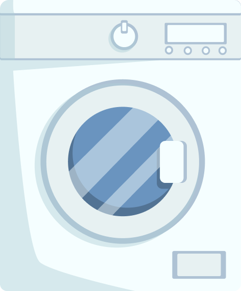
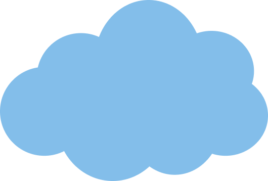
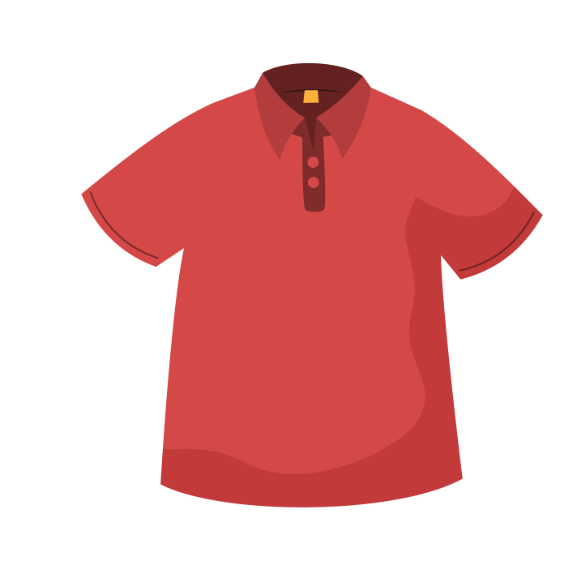
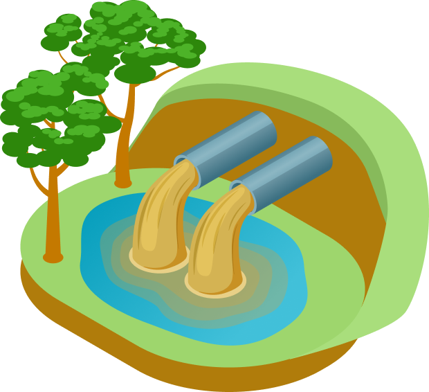
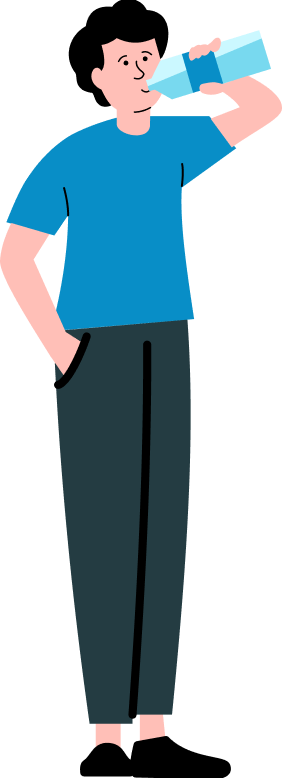

매일 반복되는 세탁. 옷은 깨끗해지지만, 보이지 않는 오염은 물과 함께 흘러간다. 섬유는 잘게 부서져 ‘미세 플라스틱’이 되고, 하수를 지나 바다에 닿는다. 그리고 결국 우리의 식탁 위로 다시 돌아온다. 깨끗함의 기준을 다시 생각해야 할 때다.
한 번의 세탁이 남기는 것
우리는 세탁을 ‘깨끗해지는 과정’으로만 인식한다.
하지만 그 과정은 동시에
아주 작은 단위의 오염을 만들어낸다.
눈에 보이지 않을 만큼 잘게 부서진
섬유들은 물을 따라 흘러가고, 결국 바다에 닿는다.
사라진 것처럼 보이지만
이 조각들은 사라지지 않는다. 축적되고,
순환하며, 다시 우리의 일상으로 되돌아온다.
문제는 크기가 아니라, 반복과 축적에 있다.
1
사라지지 않는 조각들
세탁기 안에서 옷은 깨끗해지지만, 동시에 미세한 섬유가 떨어져 나온다.
우리가 인지하지 못하는 사이, 이 작은 조각들은 이미 물속으로 흘러들어가고 있다.


세탁 1회당 최대
약 70만~ 100만 개
미세 섬유 방출
폴리에스터 의류 1벌 기준
약 1,900개 이상 배출

2
바다로 이어지는 흐름
이 미세 섬유들은 하수처리 과정을 거치지만 완전히 제거되지는 않는다.
일부는 그대로 남아 물의 흐름을 따라 이동한다.
해양 미세 플라스틱의
약 30~35%가
세탁에서 발생
매년 약 50만 톤 이상의
미세 섬유가 바다로 유입

3
다시 돌아오는 오염
바다에 쌓인 미세 플라스틱은 생물의 몸속으로 들어가고, 먹이사슬을 따라 다시 인간에게
도달한다. 보이지 않을 뿐, 이미 우리의 일상과 연결되어 있다.

인간은 연간
약 5만 개 이상의
미세 플라스틱 섭취
4
반복이 만드는 변화
세탁은 일상적인 행위지만, 반복될수록 영향은 누적된다.
더 자주, 더 많이 이루어질수록 배출 역시 함께 증가한다.
※ 참고 및 출처: IUCN(국제자연보전연맹, 2017), UNEP(유엔환경계획, 2021), WWF(세계자연기금, 2019),
University of Plymouth(영국 플리머스 대학교) Napper & Thompson 연구(2016), Textile Exchange(텍스타일 익스체인지, 2022) 등
지금 당장 줄일 수 있는 방법
세탁을 완전히 멈출 수는 없다. 하지만 방식은 바꿀 수 있다. 미세 섬유의 발생은 대부분 '마찰'과 '방북'에서 비롯된다.
즉, 세탁 과정의 강도를 낮추고 빈도를 줄이는 것만으로도 배출량은 눈에 띄게 줄어든다. 거창한 변화가 아니어도 괜찮다.
일상의 작은 선택들이 모이면, 흘려보내는 양 역시 달라진다.
지금 당장 줄일 수 있는 방법
세탁을 완전히 멈출 수는 없다. 하지만 방식은 바꿀 수 있다. 미세 섬유의 발생은 대부분 '마찰'과 '방북'에서 비롯된다.
즉, 세탁 과정의 강도를 낮추고 빈도를 줄이는 것만으로도 배출량은 눈에 띄게 줄어든다. 거창한 변화가 아니어도 괜찮다.
일상의 작은 선택들이 모이면, 흘려보내는 양 역시 달라진다.
세탁망 사용하기
세탁망은 옷을 보호하는 도구이기도 하지만, 동시에 미세 섬유의 배출을 줄이는 역할을 한다. 섬유 간 마찰을 완화하고, 떨어져 나온 입자가 바로 물로 흘러가지 않도록 일부를 잡아준다. 특히 합성섬유 의류를 세탁할 때는 효과가 더 크다.
찬물 세탁 & 저속 코스 선택
높은 온도와 강한 회전은 옷을 더 깨끗하게 만드는 대신, 섬유를 더 빠르게 손상시킨다. 찬물과 저속 코스를 선택하면 섬유의 마모를 줄일 수 있고, 그만큼 미세 섬유의 발생도 감소한다.
고농축 세제 사용
세제의 양과 헹굼 횟수는 생각보다 중요한 요소다. 고농축 세제를 사용하면 적은 양으로도 충분한 세탁 효과를 낼 수 있고, 헹굼 횟수를 줄일 수 있다. 이는 전체 세탁 과정의 길이를 줄이고, 마찰을 감소시키는 데 도움이 된다.
세탁 횟수 줄이기
가장 효과적인 방법은 단순하다. 세탁 횟수를 줄이는 것이다. 꼭 필요한 경우에만 세탁하고, 청기나 부분 세척으로 관리하는 습관을 들이면 불필요한 배출을 줄일 수 있다. '깨끗함'의 기준을 조금만 유연하게 조정하는 것, 그것이 시작이다.
천연섬유 선택하기
옷을 고르는 단계에서도 선택은 달라질 수 있다. 합성섬유는 세탁 시 미세 플라스틱을 발생시키지만, 면이나 울과 같은 천연섬유는 자연 분해가 가능하다. 소재를 바꾸는 것만으로도 구조적인 배출을 줄일 수 있다.
기술은 어디까지 왔나
문제가 분명해진 만큼, 이를 해결하려는 시도도 함께 시작되고 있다. 일상의 방식만으로 줄이는 데에는 한계가 있지만,
기술은 그 한계를 보완하는 방향으로 움직이고 있다. 배출을 '줄이는 것'을 넘어, '막고 바꾸는' 단계로 나아가는 중이다.
세탁 과정에서 발생한 미세 섬유를 배출 전에 걸러내는 방식이다. 세탁기 배수 라인에 필터를 연결해 물과 함께 흘러나가는 섬유를 물리적으로 포집한다. 삼성전자가 아웃도어 브랜드 파타고니아, 해양 보호 단체 오션와이즈와 협업하여 개발한 전용 필터는 최대 98%의 포집 성능을 인정받아 미국 타임(TIME)지의 ‘2023년 최고의 발명품’으로 선정되기도 했다. 기존 세탁기에도 간편하게 연결할 수 있어 현재 가장 빠르게 확산되고 있는 기술이다.
최근에는 필터를 별도로 설치하는 것을 넘어, 세탁기 자체에 저감 기능을 포함하려는 시도가 이어지고 있다. LG전자와 삼성전자는 미세 플라스틱 배출을 최대 60~70%까지 줄여주는 전용 세탁 코스를 최신 모델에 탑재하기 시작했다. 특히 프랑스는 2025년부터 신규 세탁기에 미세 플라스틱 필터 장착을 의무화하는 법안을 세계 최초로 통과시켰으며, 이는 향후 가전의 글로벌 표준 기능으로 자리 잡을 전망이다.
미세 플라스틱을 줄이는 또 다른 접근은 '소재'의 근본적인 변화에 있다. 옥수수나 사탕수수 등에서 추출한 원료나 미생물을 기반으로 한 자연 분해 가능 섬유를 개발해, 세탁 과정에서 발생하는 오염 자체를 줄이려는 것이다. 기존 합성섬유를 대체할 수 있는 지속 가능한 소재로 주목받고 있으며, 수중에서도 100% 분해되는 소재에 대한 연구와 시범 도입이 가속화되고 있다.